Sobre Nosotros
En UITN formamos personas a través del Taekwon-Do ITF, combinando técnica, disciplina y valores. Creemos que esta disciplina es una herramienta de crecimiento físico y mental que fortalece el carácter y la confianza.
Nuestra misión es enseñar a nuestros alumnos con cariño y transmitirles los mejores valores, fomentando el respeto, la perseverancia y el compañerismo dentro y fuera del dojang.
En UITN no solo entrenamos atletas, formamos personas.
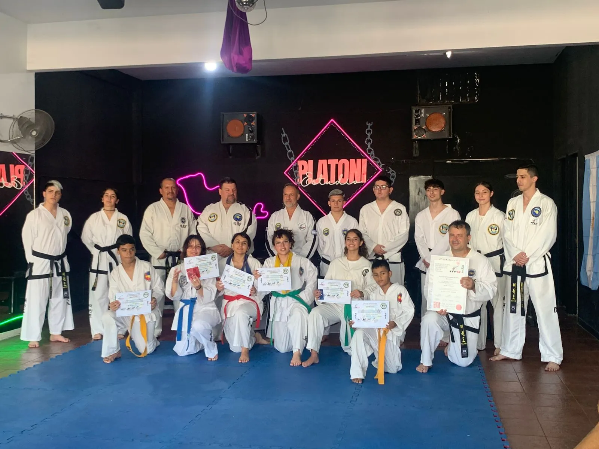
Crecimiento de UITN TAEKWON-DO
Misión
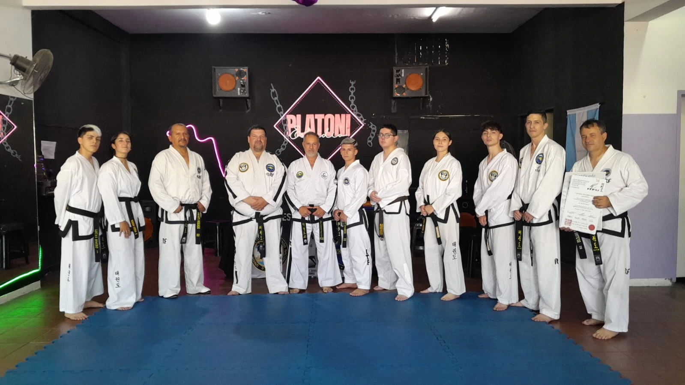
generar un taekwon-do diferente, dónde la inclusión social sea parte de este deporte, y todos tengan las mismas oportunidades de progreso.
Visión
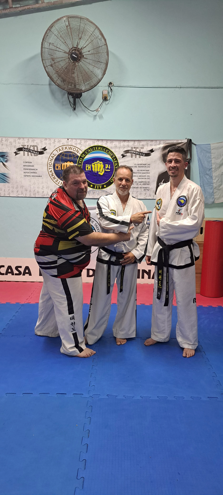
Crecimiento constante de alumnos e instructores de alto nivel de conocimiento teórico, practico, y rápida salida laboral.
Valores
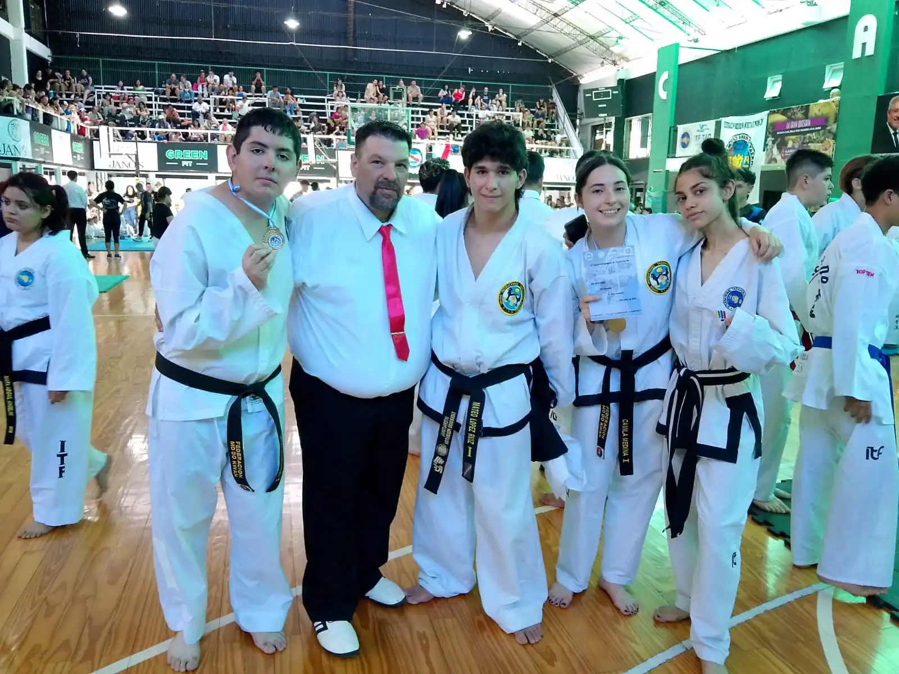
Aprender y compartir vivencias entre compañeros, disfrutar de torneos, seminarios, campamentos, viajes, etc. Sentir que somos una gran familia.
Creciendo Juntos
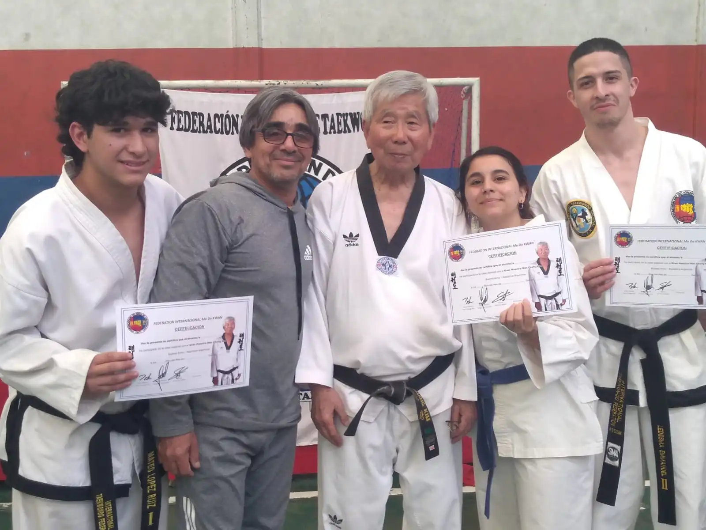
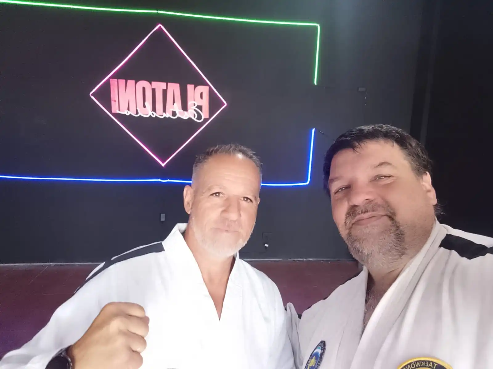
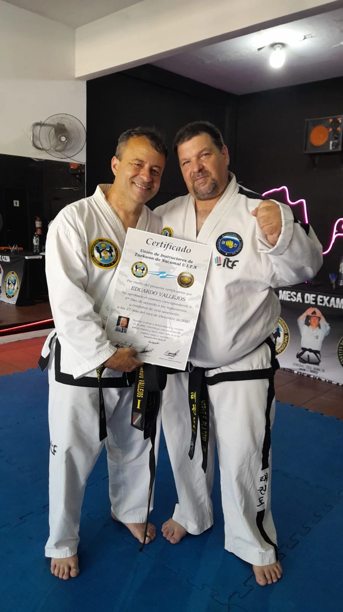
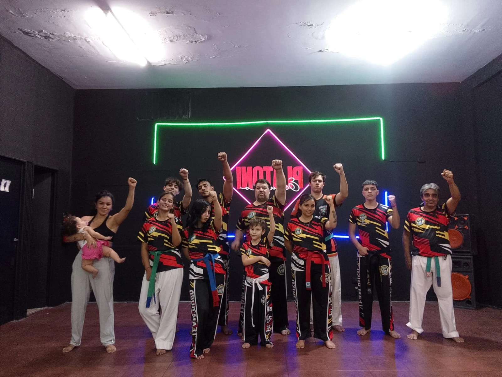
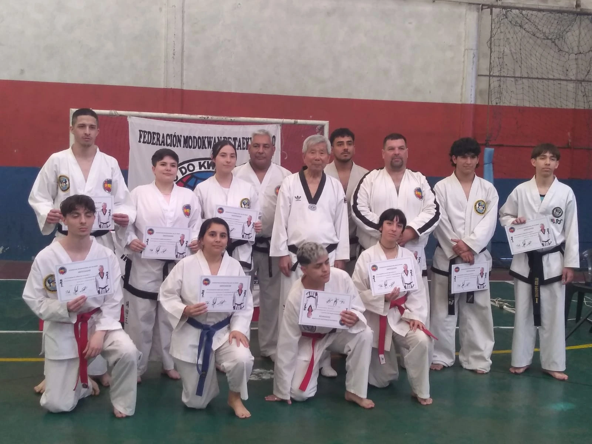
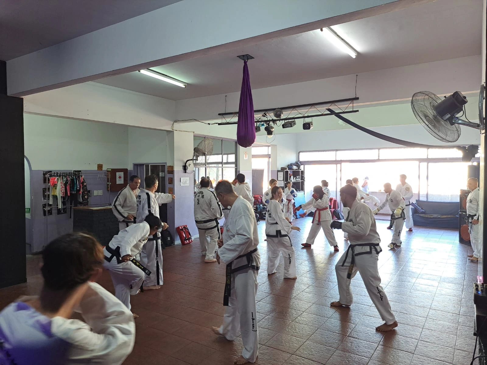
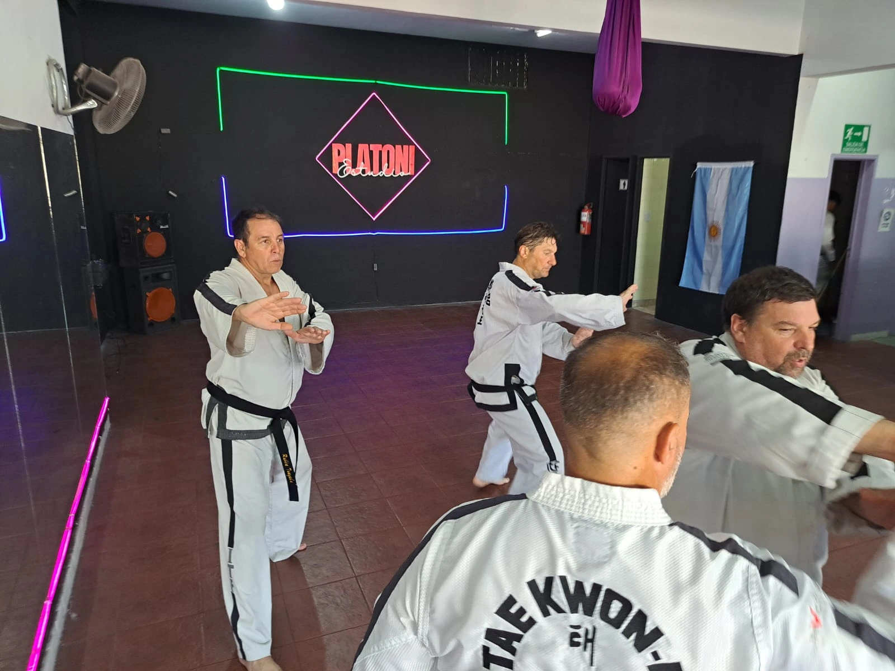
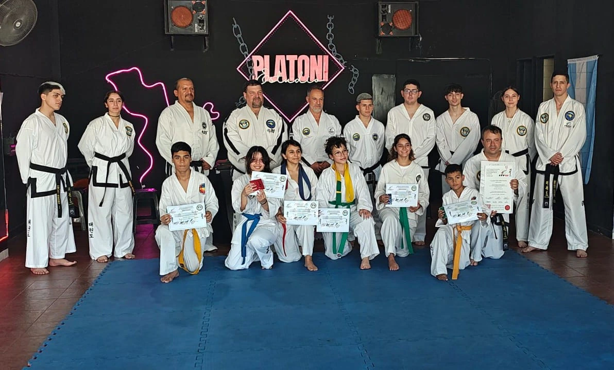
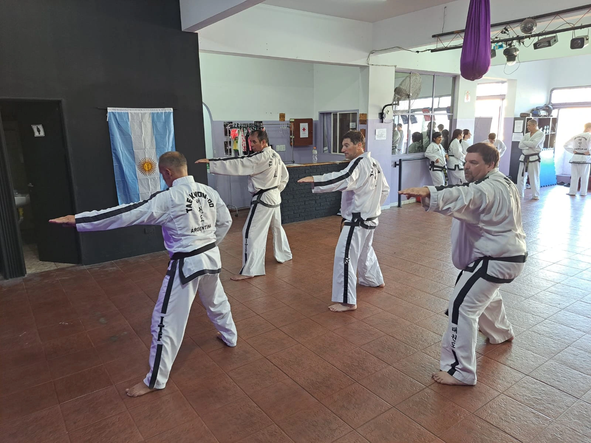
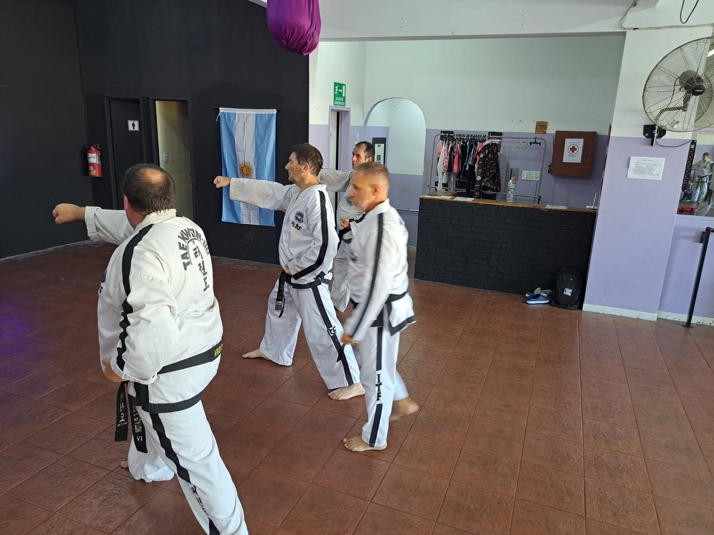
Disciplina y compromiso Lo que realmente enseñamos cuando dejamos que nuestros hijos abandonen el Taekwondo
Inscribimos a nuestros hijos en taekwondo con la esperanza de que desarrollen disciplina, constancia y valores que los acompañen toda la vida. Sin embargo, cuando después de unos meses dicen que no quieren seguir y simplemente aceptamos esa decisión, dejamos pasar una oportunidad importante de enseñanza.
Los niños, por su edad y desarrollo emocional, no siempre entienden el valor del esfuerzo sostenido ni las recompensas que trae la perseverancia. Suelen buscar la comodidad inmediata y evitar lo que les resulta difícil o incómodo. Si ante la primera dificultad les permitimos abandonar una actividad que contribuye a su crecimiento, el mensaje que reciben es que rendirse es válido cuando algo se vuelve complicado.
Si un hijo dijera que no quiere ir más a la escuela, no aceptaríamos fácilmente esa decisión porque sabemos que la educación es fundamental para su futuro. Del mismo modo, actividades como el taekwondo no solo fortalecen el cuerpo, sino también el carácter, la disciplina y la capacidad de enfrentar retos.
La responsabilidad de los padres es guiar, acompañar y motivar, no imponer sin diálogo, pero tampoco ceder ante cada resistencia. Explicar la importancia del compromiso y dar ejemplo con nuestras propias acciones ayuda a que comprendan que el esfuerzo forma personas más fuertes y preparadas.
Más allá del deporte, lo que está en juego es la enseñanza sobre cómo enfrentar las dificultades de la vida. El verdadero aprendizaje no está en evitar los obstáculos, sino en desarrollar la constancia y el coraje para superarlos y levantarse cada vez que sea necesario.
Autor: Sabunim Ronald Chacón
Contactenos
Ubicación
Av. Gdor. Vergara 2342, Galería Tesei - 1er Piso (Platoni Estudio)
Lunes y miercoles 19:30 a 21:00 y Sábados 14:00 a 16:00
¡Te esperamos!